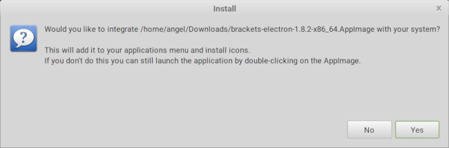

How to fix common Brackets issues that may occur with the Linux Operating System.
Brackets depends on libcrypt11 but newer version of Ubuntu ship with libcrypt20. If you’re using Ubuntu or a derivative (Kubuntu, Linux Mint, etc) you may get an error message similar to the following:
dpkg: dependency problems prevent configuration of brackets:
brackets depends on libgcrypt11 (>= 1.4.5); however:
Package libgcrypt11 is not installed.
dpkg: error processing package brackets (--install):
dependency problems - leaving unconfigured
Processing triggers for hicolor-icon-theme (0.15-0ubuntu1) ...
Errors were encountered while processing:
brackets
The links below will download a copy of libcrypt11 from an older version of Ubuntu. Note that libcrypt11 can coexist peacefully with newer versions.
Ubuntu has a PPA for Brackets installs which will automatically import libcrypt11 while also keeping Brackets up to date automatically. To install from PPA, open a terminal and then:
1.9 Preview requires a newer version of lincrypt 11. The only place I could currently located such a version was an Ubuntu PPA. As with all PPAs security could be a concern.
You can download that file from Here.
If this problem still persist after the final release I'll look for better solutions add an issue to the Brackets GitHub.
If you have a high resolution screen, such as an Apple Retina, Brackets will ignore any HiDPI settings and present you with very small text and icons.
The UI Too Small Extension increases the size of fonts inside the Bracket’s UI. Unfortunately it does not change the size of the icons. You can install the extension from the Brackets Extension manager.
If the font in your work view i still too small, you can change you font size by:
An alternative to the above issues is to install Brackets-Electron- a fork of Brackets that:
Worth noting: Brackets-Electron is an unofficial fork and not supported by the Brackets team.
While being more cutting edge, and hence, potentially more error prone, Brackets-Electron does fix the above issues. Furthermore, it retains compatibility with most Brackets Extensions and can be installed alongside vanilla Brackets without conflict.
You can download Brackets-Electron here.
While the Brackets-Electron team currently publishes .deb packages alongside the more universal AppImage format, plans are to eventually move to only AppImage Packages.
To install an AppImage:
Once you run the AppImage you will be given the option of installing a shortcut to Brackets-Electron in your program menu.

Click “Yes” to install to your menu.
NOTE: If you change the location of the AppImage your program link will cease to function. Put your AppImage in a more permanent location before you run it.